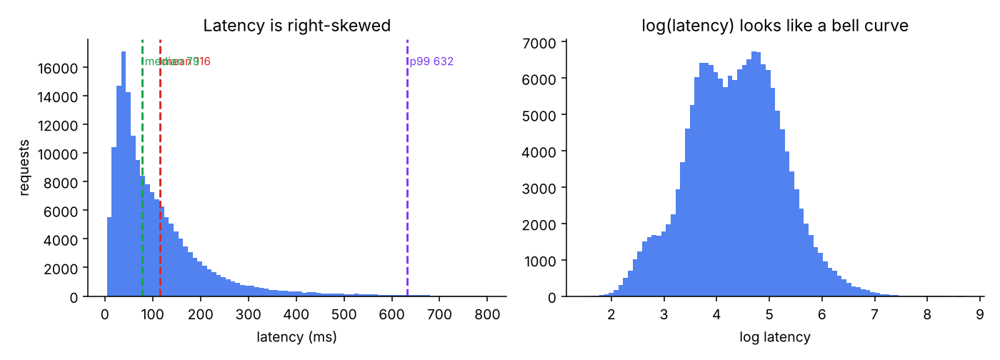
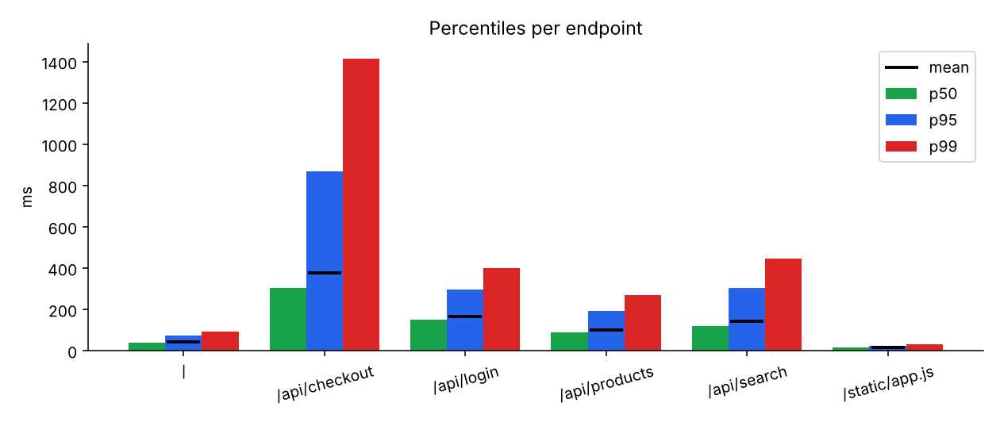
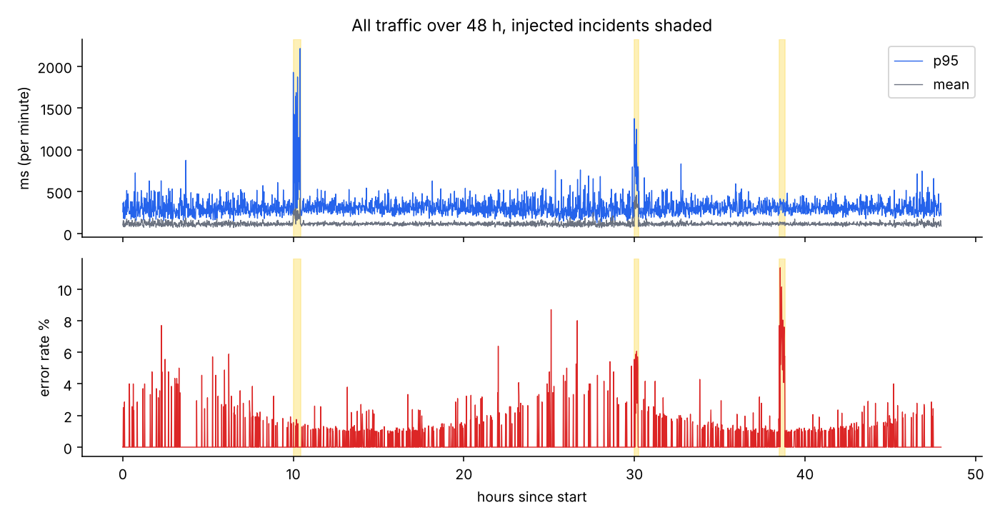
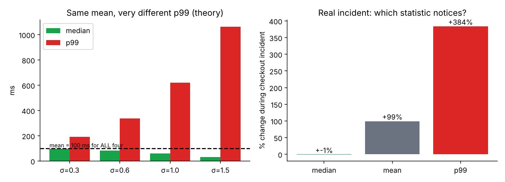
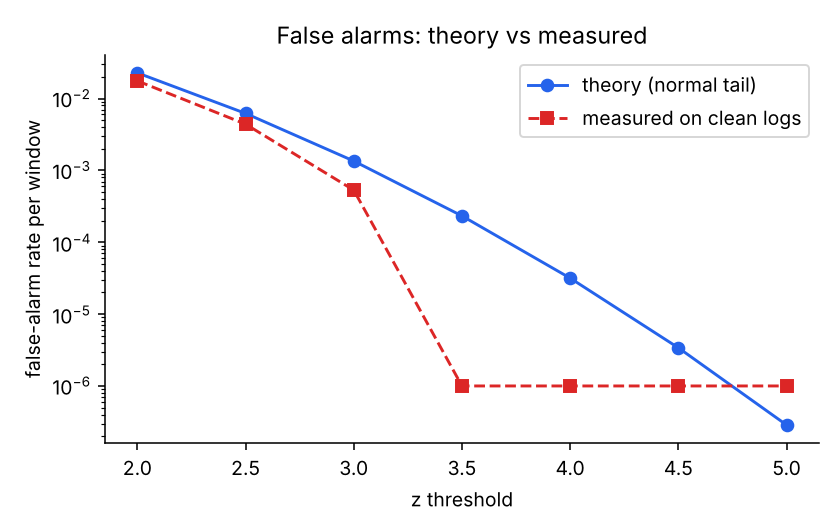
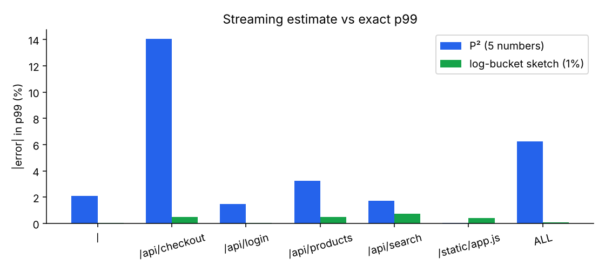
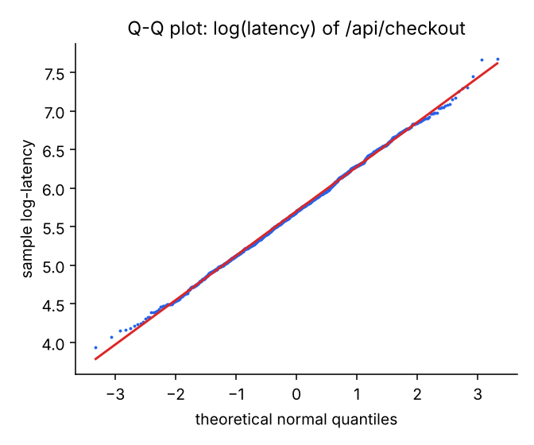

1. Why the mean lies
What this means: The mean is the usual average. A percentile such as p99 is the response time that 99 out of 100 requests beat, so it shows how bad the slow ones get. When only a few requests go wrong, the mean barely moves but p99 jumps.
Latency per minute over 48 hours, all endpoints. Red bands are the three incidents we injected on purpose. Hover over the lines to read exact values.
Same mean, very different tail
What this means: These four imaginary servers all average exactly 100 ms. The only thing that changes is the spread (sigma). A wider spread means a much worse p99, yet the mean cannot tell them apart.
Which statistic notices the incident?
What this means: We compared normal traffic with incident traffic. The longer the bar, the more that statistic reacted. The median barely noticed anything.
2. Latency explorer
What this means: Pick an endpoint (a URL the server answers) to see how fast it is. Almost every endpoint has a long tail to the right: most requests are quick, a few are very slow. That shape is called right-skewed.
Lognormal or exponential?
What this means: To describe the tail with a formula we tried two shapes. The lognormal (the logarithm of latency is bell-shaped) fits far better than the exponential (a plain decay). AIC is a score where lower is better; KS measures the gap between the curve and the real data, where smaller is better.
3. Incident detector
What this means: We cut time into 5-minute windows. For each window we ask "how unusual is this window's p95 compared with that endpoint's normal behaviour?" The answer is a z-score (how many standard-deviation steps away from normal). If z is above a threshold, we raise an alarm.
Try it yourself
What this means: Lower the threshold and the detector becomes jumpy (more alarms, some false). Raise it and it becomes strict (fewer alarms, but it might miss real problems). Red cells are flagged windows; the grey-blue bands behind them mark when incidents truly happened.
Each row is an endpoint, each column a 5-minute window (576 windows = 48 hours). Error-rate alarms are fixed at the original setting because they use a separate rule.
Detection results (threshold z = )
What this means: Each row is an incident we injected. "Delay" is how many minutes passed before the detector noticed.
Test: search error rate
Test: checkout latency
4. Theory vs experiment
(a) False alarms: what the math predicts vs what happened
What this means: If traffic is perfectly normal, a threshold of z still raises a false alarm by pure chance at a rate the bell curve can predict. We tested that prediction on clean days with no incidents.
Honest note: the measured rate is below the theory. Windows contain few requests and we estimate the spread (sigma) robustly, so the detector is a little more conservative than the idealised math. Lower than predicted is the safe direction, but it is a mismatch we want to be upfront about.
(b) Exact vs streaming percentiles
What this means: A busy server cannot store every request. Streaming methods estimate percentiles on the fly using little memory. P² is a small moving estimator; the log-bucket sketch counts requests in bins. Smaller error is better.
(c) Lognormal prediction vs measured percentiles
What this means: After fitting a lognormal curve to each endpoint, we asked it to predict p50, p95 and p99 and compared with reality. Values that match show the model is trustworthy.
5. How it works
What this means: The whole project is a simple chain. Each step feeds the next, and the last step is the page you are reading.
- 1
Generate logs
Simulate 48 hours of web traffic with known incidents.
generator/ - 2
Parse into SQLite
Read each log line, clean it, store it in a table.
parser/ - 3
SQL percentiles & windows
Group by endpoint and 5-minute window.
sql/ - 4
Stats + detectors
Fit distributions, run tests, flag unusual windows.
analysis/ - 5
This site
results.json drives every chart on this page.
docs/
Repository: github.com/Harit23/server-log-anomaly-analyzer
Static figures from the analysis report







6. Data quality and limitations
What this means: Before analysing, we checked the logs for broken or odd rows. Below is what we looked for and what we found.
Limitations
- Synthetic data. The logs are simulated, not from a real production server, so real traffic may be messier.
- Incidents are known. We injected the three incidents ourselves, so "detected 3 of 3" is easier than finding unknown problems.
- Latency ignores load. In the simulation, latency does not rise when traffic rises, which real servers often do.
- Only two days. A short span cannot show weekly patterns or slow drifts.